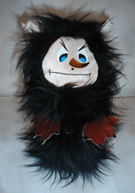
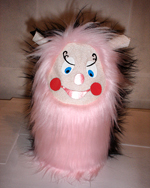

Здравствуйте, мои дорогие коллеги по счастью!
Приветствую Вас, милые и заботливые родители!
Я написала эту книжку для того, чтобы поделиться своим маленьким открытием, которое я совершенно случайно для себя сделала, и оно помогло мне вложить первые крупицы добра в воспитании своего ребенка Потому что только в наших руках возможность дать маленьким сокровищам истоки добра, и только мы ответственны за то, что этого не сделали. Давайте постараемся не упустить время, пока наши дети способны все «впитывать». Но делать мы это должны незаметно для ребенка и ненавязчиво.
Персонаж, который я сегодня представляю для вас поможет сделать процесс нравственного воспитания непринужденным. Потом Вы сами заметите как ваш ребенок научится самостоятельно контролировать свои поступки и исправлять плохие с комментарием « Хорплоша, я не хочу тебя огорчать, поэтому я исправлюсь!»…
Итак, теперь садитесь с ребенком (детьми) поудобнее и ПОЕХАЛИ в мир Хорплоши!
Знакомьтесь, Хорплоша
Книга №1
Теперь, когда мы с Вами познакомились с Хорплошей, пришло время изготовить куклу - Хорплошу своими руками. Это также носит воспитательный характер. Работу можно начать с беседы.
-Малыш, мы сейчас с тобой будем делать куклу - Хорплошу, своими руками. Ты вложишь в изготовление Хорплоши свои старания, и она будет слушаться только тебя, и ты увидишь сам, как твои поступки смогут ее сделать доброй или же испортить ей настроение. И ты поймешь, что каждый твой поступок очень и очень ЗНАЧИМ!
Сделать куклу можно из картона, меха, ткани, ниток. Вообщем, на все ваша фантазия. Представляю фотографии разных Хорплош, изготовленных родителями.
А теперь давайте приступим! Вместе с ребенком будем шить Хорплошу из меха. Для этого вам потребуется:
Кусок меха темного цвета (размер 30х30см. лучше взъерошенного и лохматого), кусок меха светлого цвета (размер 30х30см), нитки, иголка, цветной картон, белая ткань, подкладочный материал, ножницы.
Этапы выполнения работы:
1. Заранее вырезать из картона глаза, нос, и рот Хорплоши, на "хорошую" и на "плохую" стороны. ( как на фото)
2. Приготовить ушки-пакетики. Для этого сложить на конус светлую ткань для внутренней стороны уха, темную ткань для внешней стороны уха, вставить вовнутрь подкладочный материал, прошить по бокам.
Выполняя это действие можно цитировать строчки из сказки:
Пакетиками ушки смешно стоят торчком…
Как ты думаешь малыш, зачем Хорплоше такие уши? Это для того, чтоб она все слышала : Какие слова говорят дети? Не кричат, не капризничают ли они?
3. Выкроить из меха светлого тона Хорошу.
Продолжаем беседу с ребенком по ходу выполнения работы.
-Если Хорплоша слышит, что дети говорят вежливые слова, ведут себя тихо и спокойно, она будет становится вот такой, светлой , гладкой и аккуратной. И тоже будет делать хорошие поступки.
4. Выкроить из меха темного тона Плошу.
-А если вдруг Хорплоша слышит, что дети говорят грубости и капризничают, она становится безобразной - взъерошеной и лохматой.
5. Сложить выкройки мехом друг к другу и сшить с изнаночной стороны, вшивая ушки-пакетики.
6. Вшить с изнаночной стороны овал для лица Хорплоши.
7. Наклеить элементы лица на добрую сторону Хорплоши.
- Вот такие вот добрые глаза у Хорплоши, когда ее никто не огорчает поступками.
8. Наклеить элементы лица на злую сторону Хорплоши.
- Вот такие косые глаза у Хорплоши, когда ее огорчают дети своим поведением.
Хорплоша готова!
Теперь Хорплоша будет жить с нами в доме, и следить за твоим поведением. А ты не должен забывать о том, что твои поступки управляют поведением Хорплоши.
На следующий день, после того как Хорплоша переночует в вашем доме, можно начинать использовать игрушку с целью нравственного воспитания ребенка.
У родителей часто возникает проблема, когда дети не слышат их с первого раза.
Например:
-Катя, сложи свои игрушки в коробку.
Если Катя первый раз вас не услышала, второй раз можно сказать.
-Катя, обрати внимание, почему Хорплоша стала грустной? Еще немного и она совсем огорчиться и будет делать нехорошие поступки. Может быть, ты что-то забыла сделать?
А теперь Катя, давай поиграем. Я буду тебе говорить поступки, а ты поворачивай Хорплошу той стороной, какой она может стать, если совершать этот поступок.
-Забывать поливать цветы?
-Чистить зубы и умываться на ночь
-Делать кормушки и скворечники для птиц.
-Обижать и мучить животных.
-Не слушаться маму и папу.
-Вырывать цветы с корнем.
-Врать
-Брать без разрешения чужие вещи.
-Разбрасывать мусор на улице и дома.
-Обещать и не выполнять
-Ответственно относиться к поручениям.
А теперь придумай сама, какие поступки и какаим образом могут изменить Хорплошу?
Помни, малыш, что Хорплоша всегда подглядывает за тобой, и твои поступки могут сделать ее доброй или злой. И только твои поступки могут сделать наш мир теплым светлым и радостным, или наоборот – холодным, темным и страшным!
Еще, дорогие родители, хочу вам предложить разнообразить привычную игру «Классики», и играя в нее не упускать возможность нравственного воспитания. Итак, чертим «Классики» традиционно, только на квадраты с цифрами кладем листы, на которых напечатаны качества.
Например:
1.сострадание 2.безразличие,
3.Чистоплотность 4. неряшливость, 5.вежливость 6.грубость
7. аккуратность 8. небрежность,
9. доброта 10.жадность.
А там, где обычно пишется КОТЕЛ.
Помещаем фото доброй Хорплоши.
Попадая на 1, читаем качество, придумываем поступок, который выполняем и закрываем лист, на котором написано плохое качество. Например, кормим с ребенком голубей хлебными крошками, и говорим о том, что это и есть сострадание. Берем лист и закрываем безразличие. Прыгаем классики. Пока плохой поступок не закрыт, на клетку прыгать нельзя.
Вы можете делать такие поступки:
Чистоплотность - проверяем, есть ли в кармане носовой платок, не успели ли замарать одежду.
Вежливость - здороваемся с проходящими людьми, вежливо просим в магазине купить конфеты.
Доброта - делимся конфетами с детьми во дворе.
Аккуратность - бумажки от конфет выбрасываем в мусорку.
Окончание игры.
Ну вот мы и поиграли в « Хорплошины классики», совершили хорошие поступки, закрыли ими плохие, и посмотри, малыш, Хорплоша добрая и веселая, и тоже сейчас будет сеять крупицы добра кругом и всюду. А все потому, что мы своими хорошими поступками сделали ее ДОБРОЙ.
Фото Хорплоши можете посмотреть в фотогаллерее